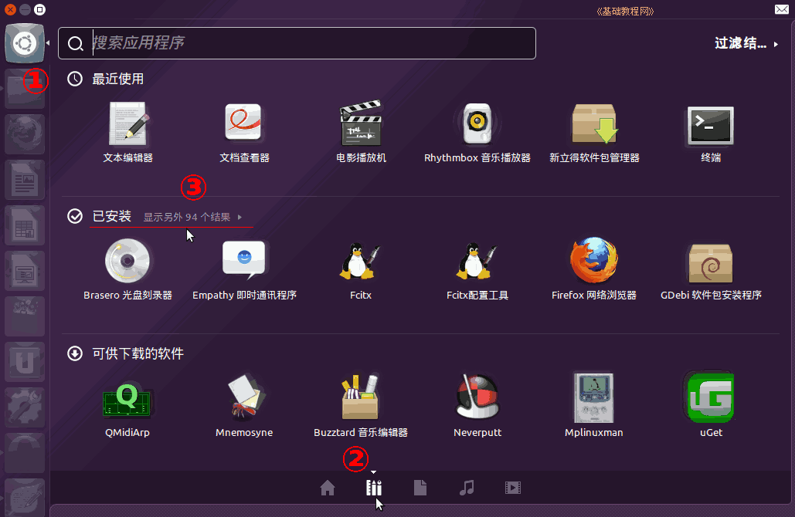
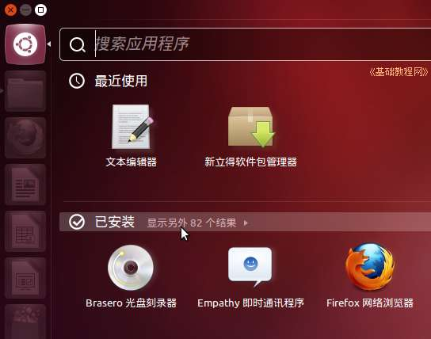
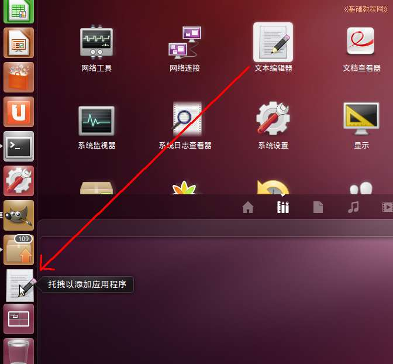
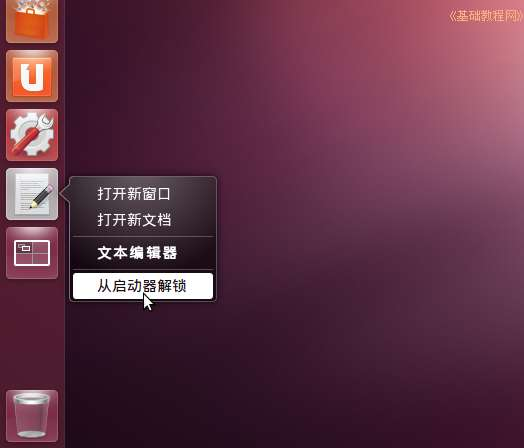

Ubuntu 入门操作指南
作者：TeliuTe 来源：基础教程网
二、添加面板程序图标 返回目录 下一课使用面板图标可以快速启动程序，可以把常用的程序放到面板上；
1、应用程序菜单
1）点左上角主按钮，在出来的面板下边，选择第二个“菜单”标签，在出来的应用程序列表中，点“显示更多程序””；

2）在出来的程序列表中，在中间“已安装”旁边点击“显示另外82项”，出来更多程序图标；

3）往下拉找到“文本编辑器”图标，点击选中，然后拖到左边的快速启动栏里，从而添加一个程序按钮；

4）要从面板上删除一个程序按钮，瞄准点右键，然后选择“从启动器解锁”，就可以去掉它，以后到主面板里去找它；

本节学习了的向面板添加程序图标的基础知识，如果你成功地完成了练习，请继续学习下一课内容；
本教程由86团学校TeliuTe制作|著作权所有
基础教程网：http://teliute.org/
美丽的校园……
转载和引用本站内容，请保留版权信息和本站链接。